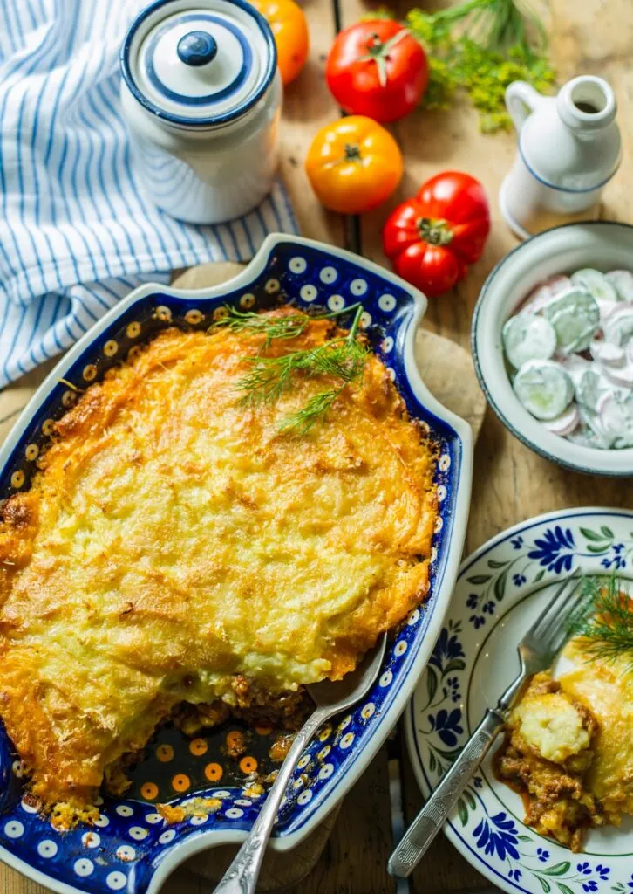

Koorene Kartuli-Hakkliha Vorm
|  |
Koostisosad
| Koostisosa |
kogus |
| Kartul |
500 g |
| Hakkliha |
500 g |
| Peekon |
150 g |
| Muna |
6 tk |
| Toidukoor |
400 ml |
| Riivjuust |
200 g |
| Või |
10 g |
| Maitseained |
Maitse järgi |
Valmistamine
- Soojenda ahi 180 kraadi juurde
- Pese kartulid ja viiluta õhukesteks viiludeks
- Määri ahjuvorm võiga ning laota vormi põhja esimene kiht kartuli viile
- Prae hakkliha, maitsesta ning laota ühtlaselt esimese kartuli kihi peale
- Laota teine kihti kartuli viile
- Prae peekon ning laota ühtlase kihina teise kartuli kihi peale
- Laota kolmas kiht kartuli viile
- Klopi munad, lisa maitseained ning vala ühtlaselt vormile
- Vala todukoor ühtlaselt vormile
- Pane vorm ahju ning küpseta 20 minutit
- Võta vorm ahjust välja ning lisa riivjuust
- Peale riivjuustu lisamist küpseta veel 20 minutit
- Peale küpsemist lase 15 minutit jahtuda ning Serveeri
- Head Isu!